Filosofía
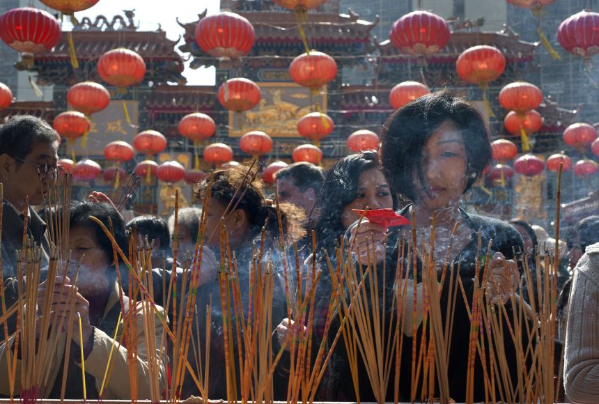
El confucianismo, el taoísmo y el budismo constituyen los tres pilares intelectuales y espirituales de la civilización china. El Confucianism, inspirado por Confucius, estableció una ética centrada en la responsabilidad social, la jerarquía y la armonía familiar, influyendo profundamente en la organización política desde la dinastía Han Dynasty. El Taoism propuso la búsqueda de equilibrio con el "Tao" o el orden natural, aportando una visión espiritual que influyó en la medicina, la ciencia y las artes. Por su parte, el Buddhism, introducido desde India en el siglo I, promovió la iluminación personal y enriqueció la arquitectura, la literatura y el pensamiento filosófico. Más que competir, estas corrientes dialogaron y se integraron, configurando una identidad cultural compleja cuya influencia perdura en la China contemporánea.
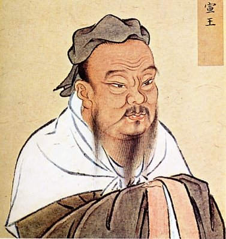
Confucianismo
Sistema ético y filosófico basado en las enseñanzas de Confucius que promueve la armonía social mediante el cumplimiento de deberes, el respeto a la jerarquía, la educación y la virtud moral.
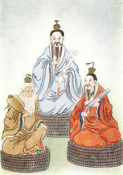
Taoísmo
Tradición filosófico-religiosa centrada en el "Tao" (el Camino), que propone vivir en equilibrio con el orden natural del universo, practicando la sencillez, la espontaneidad y el principio de wu-wei (acción sin forzar).
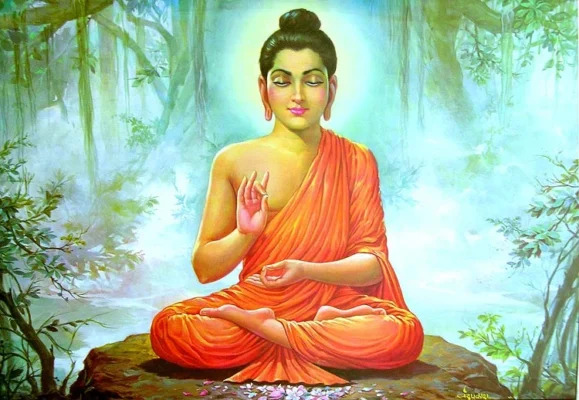
Budismo
Doctrina espiritual originada en India por Gautama Buddha que busca la iluminación mediante la meditación, la sabiduría y la superación del sufrimiento para alcanzar el nirvana.
SÍMBOLOS Y SIGNIFICADOS
En la cultura china, los símbolos auspiciosos constituyen un lenguaje visual que comunica valores, creencias y aspiraciones colectivas. Lejos de ser meramente decorativos, estos elementos expresan una cosmovisión en la que el ser humano, la naturaleza y el universo se encuentran interconectados. El dragón, considerado una criatura benevolente y poderosa, simboliza la energía vital (Qi), la autoridad y la protección, y ha estado históricamente vinculado al emperador y al orden celestial. El fénix, por su parte, representa la armonía, la virtud y la renovación, y su unión simbólica con el dragón refleja el equilibrio entre fuerzas complementarias.
Otros animales también poseen significados profundos: la grulla encarna longevidad y sabiduría; la carpa representa perseverancia y superación; y la tortuga simboliza estabilidad, resistencia y continuidad. Estos símbolos suelen aparecer en arquitectura, textiles, cerámicas y celebraciones tradicionales, reforzando valores como la prosperidad, la familia y la buena fortuna.
El color es igualmente fundamental en la simbología china. El rojo está asociado con la felicidad, la celebración y la protección contra energías negativas; el dorado y el amarillo evocan poder, prosperidad y autoridad imperial; mientras que el verde sugiere armonía, crecimiento y conexión con la naturaleza. En conjunto, esta simbología no solo embellece espacios y objetos, sino que estructura una identidad cultural basada en el equilibrio, la continuidad histórica y el respeto por el orden natural.
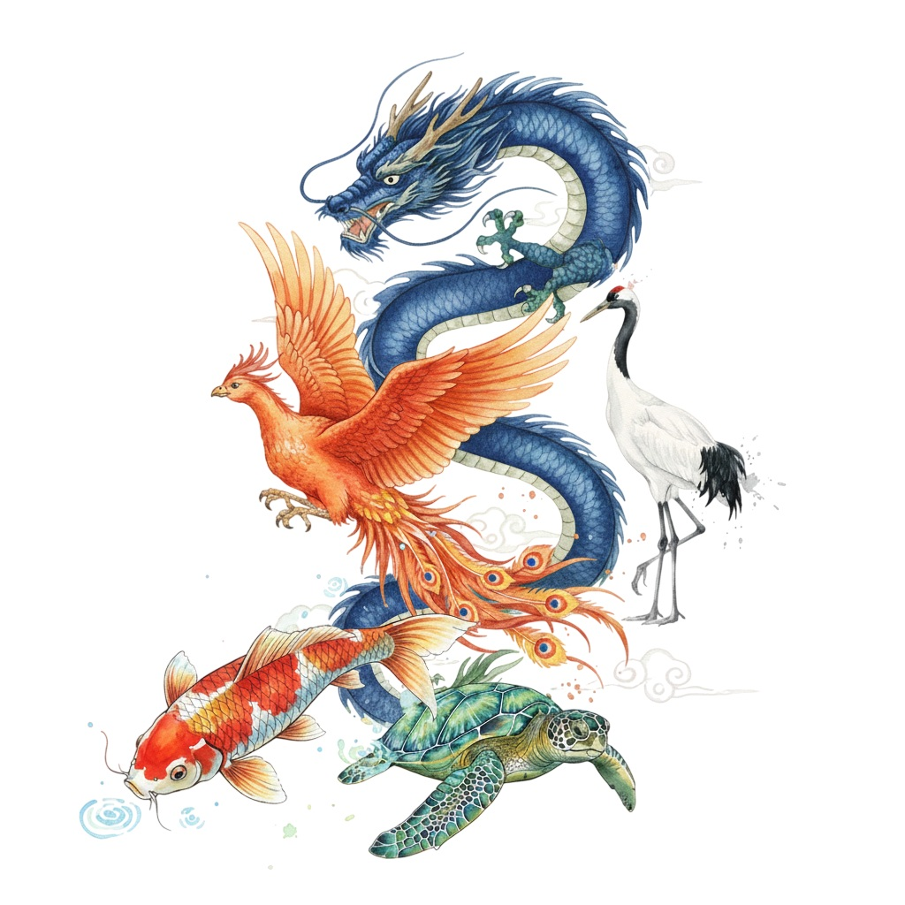
FESTIVALES TRADICIONALES
Los festivales tradicionales chinos constituyen una expresión viva de la identidad cultural y la continuidad histórica del país. Celebraciones como el Año Nuevo Chino, el Festival del Medio Otoño y el Festival del Bote del Dragón integran rituales ancestrales, simbolismo y valores familiares que fortalecen el sentido de comunidad y pertenencia. A través de elementos como linternas rojas, danzas tradicionales y ofrendas simbólicas, estas festividades transmiten mensajes de prosperidad, gratitud y renovación, reflejando una cultura donde tradición y modernidad conviven en armonía.
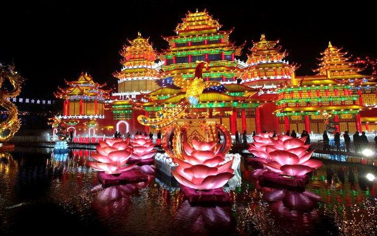
Año Nuevo Chino
El Año Nuevo Chino, también conocido como Festival de Primavera, es la celebración más importante del calendario tradicional y simboliza renovación, prosperidad y continuidad familiar. Basado en el ciclo lunar, marca el inicio de un nuevo periodo cargado de esperanza y proyección colectiva. Durante estas fechas se produce la mayor migración anual del mundo, ya que millones de personas regresan a sus hogares para reunirse con sus familias, reafirmando la centralidad del núcleo familiar en la cultura china. Las tradiciones incluyen la entrega de sobres rojos (hongbao), la decoración con faroles y símbolos auspiciosos, y las danzas del dragón y el león para atraer buena fortuna. Más que una festividad, representa un acto cultural de unidad, gratitud y renovación espiritual.
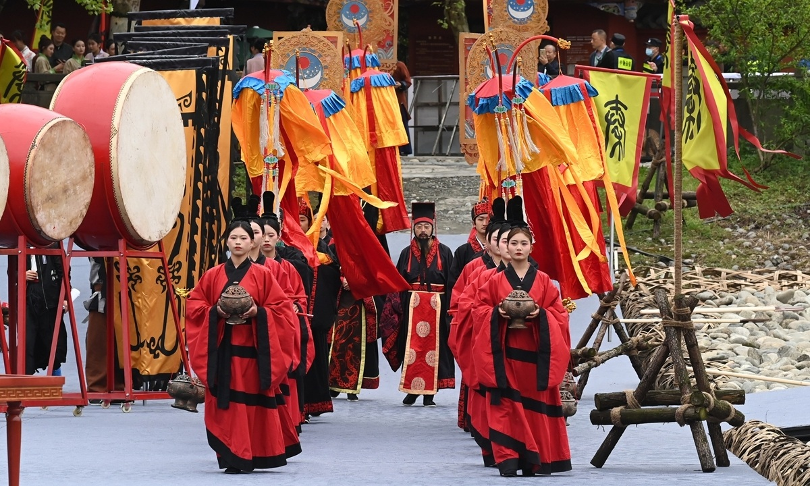
Festival Qingming
El Festival Qingming, conocido como Día de Barrido de Tumbas, es una tradición ancestral dedicada a honrar la memoria y el legado de los antepasados. Celebrado a inicios de abril, combina reflexión, respeto y renovación en un mismo acto cultural. Durante esta jornada, las familias visitan los cementerios para limpiar las tumbas, ofrecer flores, alimentos e incienso, y expresar gratitud hacia generaciones pasadas. Este ritual reafirma el principio confuciano de la piedad filial, fundamento ético de la sociedad china. Asimismo, fortalece la continuidad generacional al transmitir valores, historia y sentido de pertenencia. Qingming no solo preserva la memoria familiar, sino que consolida la identidad colectiva como un puente entre pasado y presente.
El Año Nuevo Chino y su Sistema Zodiacal
El Año Nuevo Chino se rige por el calendario lunisolar tradicional, cuyo inicio varía entre el 21 de enero y el 20 de febrero, según la primera luna nueva del año. Cada año está asociado a uno de los doce animales del zodiaco chino (Rata, Buey, Tigre, Conejo, Dragón, Serpiente, Caballo, Cabra, Mono, Gallo, Perro y Cerdo), formando un ciclo que se repite cada doce años. Además del animal, cada año se combina con uno de los cinco elementos —madera, fuego, tierra, metal y agua— creando un ciclo completo de 60 años. Este sistema no solo organiza el tiempo, sino que también influye en interpretaciones culturales sobre personalidad, fortuna y dinámicas sociales. Más que una práctica astrológica, el zodiaco chino constituye una expresión simbólica del equilibrio entre naturaleza, tiempo y sociedad dentro de la cosmovisión tradicional china.
Los festivales tradicionales de China constituyen una manifestación viva de su identidad histórica, espiritual y social. Cada celebración —desde el Año Nuevo hasta Qingming— refleja valores como la unidad familiar, el respeto por los ancestros, la gratitud y la esperanza colectiva. Participar en estos eventos permite comprender no solo sus rituales y símbolos, sino también la profunda conexión entre tradición y vida contemporánea. Asistir a un festival en China es experimentar de primera mano la armonía entre cultura, comunidad y celebración. Es una invitación a descubrir una civilización milenaria que mantiene sus raíces vivas a través de cada encuentro, cada danza y cada ritual compartido.
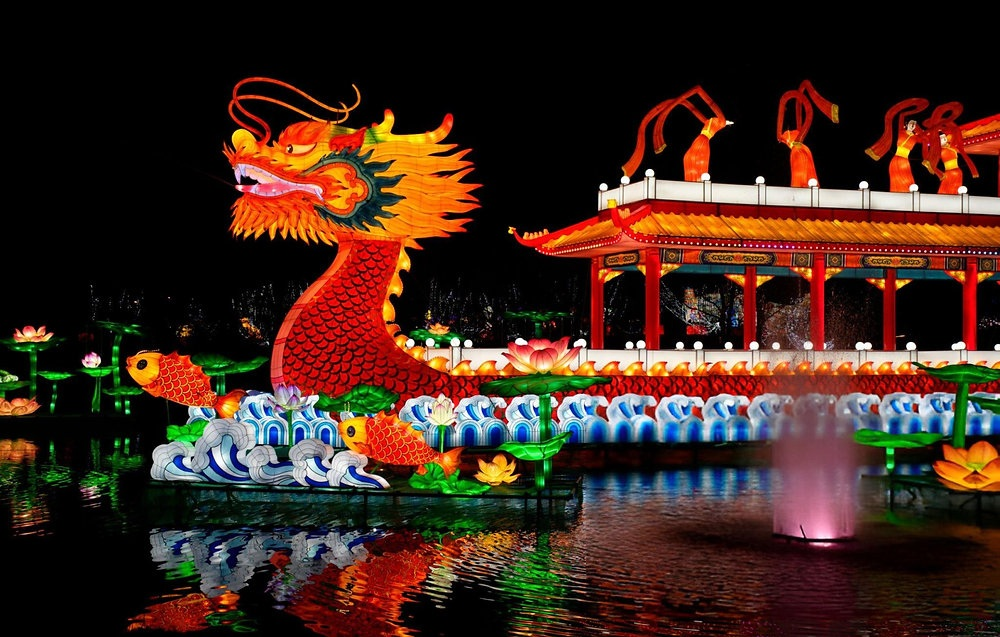
Festival del Bote del Dragón
El Festival del Bote del Dragón se celebra el quinto día del quinto mes lunar y conmemora al poeta y estadista Qu Yuan, símbolo de lealtad y patriotismo. Las emblemáticas carreras de botes en forma de dragón evocan el intento histórico de rescatarlo del río, mientras que el consumo de zongzi —arroz glutinoso envuelto en hojas de bambú— preserva la memoria de su sacrificio. Esta festividad integra tradición, deporte y simbolismo, fortaleciendo la identidad cultural a través de la memoria colectiva. En su dimensión contemporánea, continúa promoviendo valores como el honor, la fidelidad y el compromiso con el bien común.
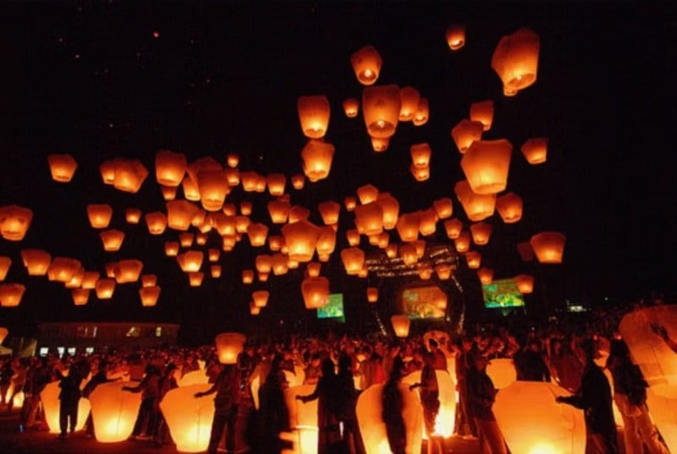
Festival del Medio Otoño
Celebrado el día quince del octavo mes lunar, el Festival del Medio Otoño honra la luna como símbolo de plenitud, equilibrio y armonía. Vinculado históricamente a la cosecha, expresa gratitud por la abundancia y el bienestar alcanzado durante el año. Las familias se reúnen para compartir pasteles de luna (mooncakes) y contemplar la luna llena, cuya forma circular representa unidad y completitud. Desde una perspectiva cultural, esta festividad refuerza valores como la cohesión social y la integridad moral, recordando la importancia del encuentro familiar incluso en contextos de distancia. Más allá de su carácter ceremonial, constituye una celebración de equilibrio entre naturaleza, comunidad y tradición.
VALORES CULTURALES
La cultura china se fundamenta en principios éticos que han moldeado su estructura social durante milenios. La familia es el eje central de la vida social y representa continuidad, identidad y responsabilidad compartida entre generaciones. El concepto de piedad filial (xiao) promueve el cuidado y respeto hacia los padres y ancestros, consolidando la familia como núcleo de estabilidad moral. En este contexto, el respeto no solo se dirige a los mayores, sino también a la jerarquía social, la tradición y el orden colectivo, favoreciendo la armonía y la cohesión dentro de la comunidad.
La educación ocupa un lugar privilegiado como herramienta de crecimiento personal y honor familiar, profundamente influenciada por la tradición confuciana que valora el conocimiento, la disciplina y la superación constante. Paralelamente, el sentido de comunidad refuerza la cooperación, la responsabilidad compartida y la búsqueda del bienestar colectivo sobre el individualismo. Estos valores configuran una sociedad donde el equilibrio, la reciprocidad y la continuidad cultural son pilares esenciales de su identidad.
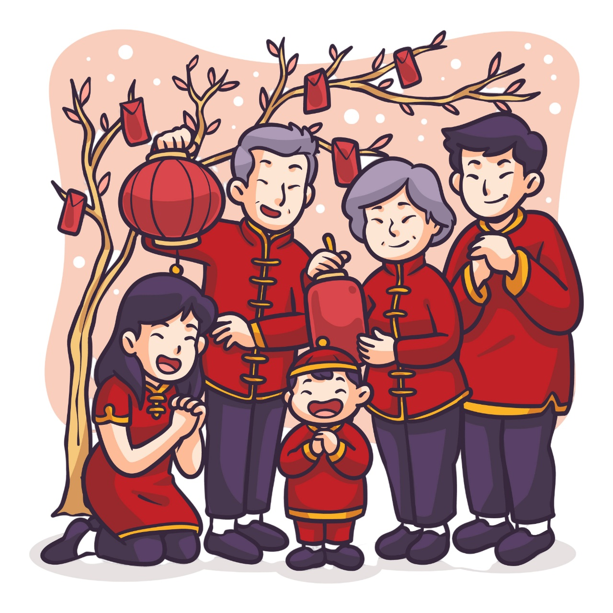
GASTRONOMIA Y VESTUARIO
Gastronomía
La gastronomía china es una expresión integral de su identidad cultural, basada en el equilibrio de sabores, texturas y colores. Más que una práctica culinaria, representa una filosofía de armonía influenciada por principios tradicionales como el yin y el yang, donde los ingredientes se combinan buscando balance nutricional y energético. La diversidad geográfica del país ha dado origen a múltiples tradiciones regionales, cada una con técnicas, especias y métodos de preparación propios. Compartir los alimentos en mesa redonda simboliza unidad, respeto y cohesión familiar, convirtiendo la comida en un acto social profundamente significativo.
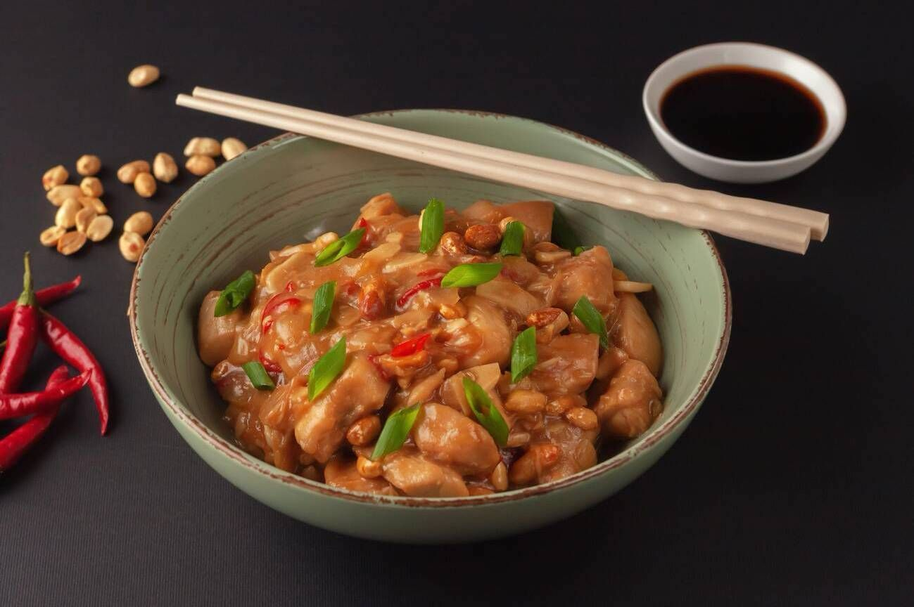
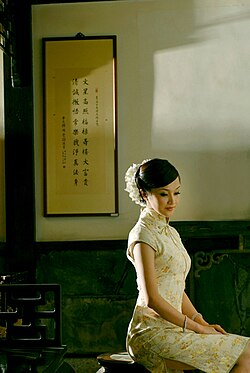
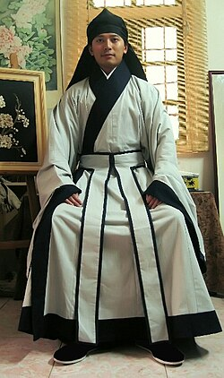
Vestuario Tradicional
El vestuario tradicional chino refleja jerarquía, simbolismo y estética cultural. Prendas como el hanfu y el qipao destacan por su elegancia, líneas fluidas y uso de colores con significado simbólico, especialmente el rojo y el dorado, asociados con prosperidad y buena fortuna. Históricamente, los materiales, bordados y diseños indicaban estatus social y función ceremonial. Más allá de su valor estético, la indumentaria tradicional expresa identidad histórica y continuidad cultural, siendo utilizada actualmente en festividades, celebraciones y representaciones artísticas como una forma de preservar el patrimonio intangible del país.